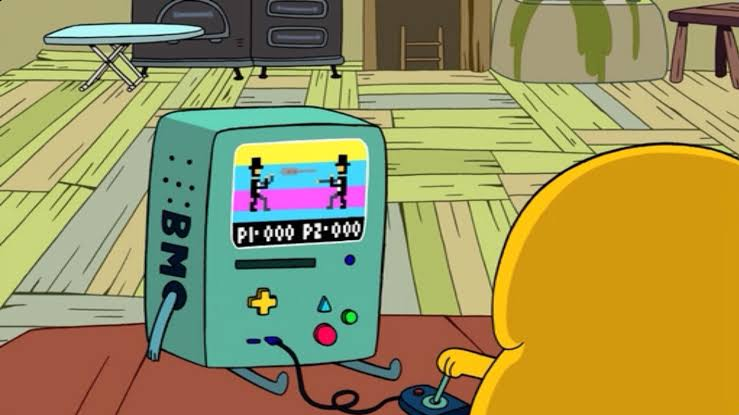

Occasional Posts
& etc.
& etc.
I'll try my best to keep things updated, which I know I'll fail miserably. I remember starting my first blog on WordPress and after posting one article I almost forgot I even had a blog lmao. Although that blog isn't dead(yet), I'll try posting there whatever I post here. Hopefully I'll work it through. Hope you'll find my posts helpful.
2nd of May 2020

Reliving The Retro Games
Playing good old retro games on modern devices.
#first-post, #retro-gaming, #games